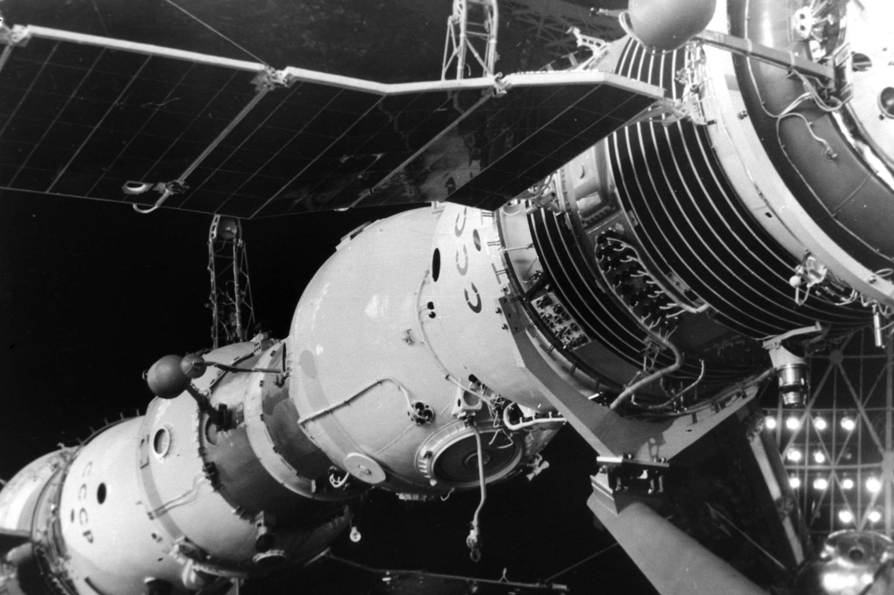
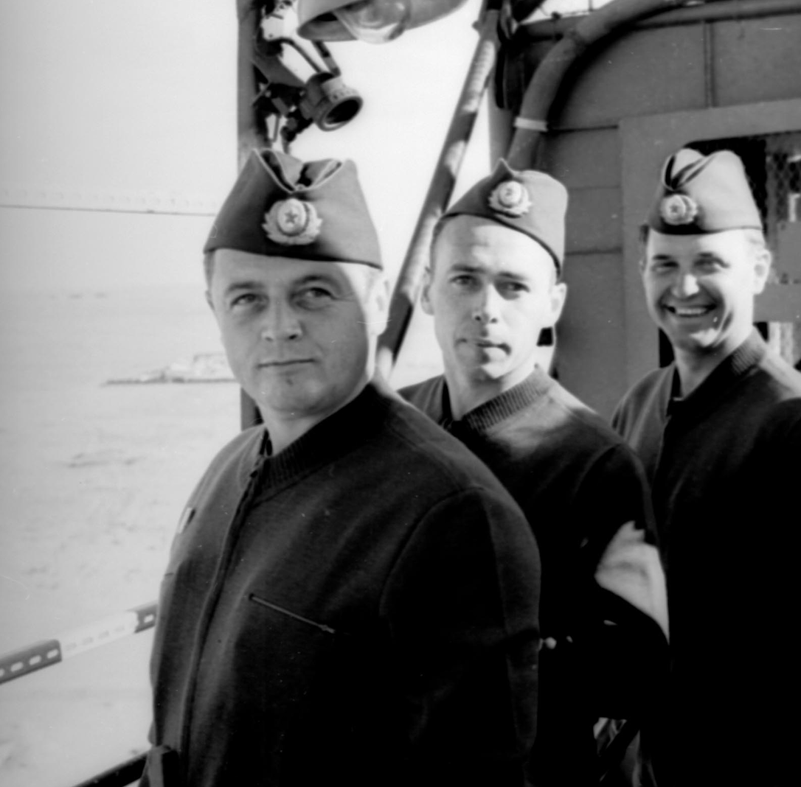

Первая в мире станция
19 апреля 1971 года ракета-носитель «Протон-К» вывела на орбиту станцию «Салют-1». Это была первая в мире долговременная орбитальная станция, созданная на базе корпуса военной станции «Алмаз» и систем космического корабля «Союз». Её длина составляла около 20 метров, масса — 18,5 тонны, а внутри было три отсека: переходный, рабочий и агрегатный.
Первая экспедиция на корабле «Союз-10» с Владимиром Шаталовым, Алексеем Елисеевым и Николаем Рукавишниковым не смогла попасть внутрь — стыковочный механизм заклинило, и космонавты вернулись на Землю, так и не открыв люк.

Трагедия «Союза-11»
6 июня 1971 года стартовал «Союз-11» с экипажем: Георгий Добровольский, Владислав Волков и Виктор Пацаев. На следующий день они успешно состыковались со станцией и провели на борту 23 дня — установив на тот момент мировой рекорд.
29 июня экипаж перешёл в спускаемый аппарат и отстыковался. А 30 июня, при спуске на Землю, произошла катастрофа. На высоте около 150 километров нештатно открылся вентиляционный клапан. Воздух из кабины улетучился за секунды, давление упало практически до нуля. Все трое погибли.
После этой трагедии ввели железное правило: взлёт и посадка только в скафандрах.
Дорога к «Миру»
После «Салюта-1» в СССР запустили ещё шесть станций серии «Салют». На них отрабатывалась техника длительных полётов, стыковок, смены экипажей. А в середине 1970-х у конструкторов родилась идея: строить станцию не одномодульной, а собирать её на орбите по частям.
Легендарный «Мир»
20 февраля 1986 года ракета «Протон-К» вывела на орбиту базовый блок будущего комплекса. Внутри было всё необходимое для жизни: две индивидуальные каюты, кают-компания с подогревателем пищи, беговая дорожка и велоэргометр, система регенерации воды и кислорода.
- «Квант» (1987) — астрофизическая обсерватория
- «Квант-2» (1989) — дополнительные системы и шлюз для выхода в космос
- «Кристалл» (1990) — для экспериментов с полупроводниками и стыковки с «Бураном»

Главный инженер, участвовавший в создании станции, говорил о модулях так:
«Каждый модуль очень дорог. Это как в семье: есть дети, но нельзя же сказать, какой ребенок самый любимый. Для меня они все одинаковые».
К моменту распада СССР станция уже представляла собой внушительный комплекс. На «Мире» побывали космонавты из разных стран, ставились рекорды продолжительности полётов, проводились тысячи научных экспериментов. Станция проработала в три раза дольше запланированного — 15 лет.
23 марта 2001 года «Мир» свели с орбиты и затопили в Тихом океане. Польский космонавт, наблюдавший за этим из Звёздного городка, вспоминал:
«Кому-то надо было, чтобы «Мира» не стало».
Опыт строительства и эксплуатации «Мира» лёг в основу следующего поколения орбитальных станций.